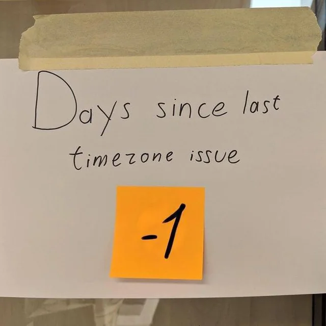

Aware and naive datetime objects without pytz
Maybe you were trying to do a simple datetime comparison, and was met with the following:
TypeError: can't compare offset-naive and offset-aware datetimes
Most solutions (1, 2) will point you towards pytz, but the lib page at pypi mentions:
Projects using Python 3.9 or later should be using the support now included as part of the standard library, and third party packages work with it such as tzdata
Let’s start by reproducing the problem.
import datetime
start_date=datetime.datetime.strptime("2022-01-01T22:03:30", "%Y-%m-%dT%H:%M:%S")
end_date=datetime.datetime.strptime("2022-01-01T22:03:33Z", "%Y-%m-%dT%H:%M:%S%z")
if start_date >= end_date:
raise ValueError("Cannot end before you begin!")
this block of code raises the TypeError: can't compare offset-naive and offset-aware datetimes message.
The official docs for datetime mentions
Date and time objects may be categorized as “aware” or “naive” depending on whether or not they include timezone information.
Well in our date strings ("2022-01-01T22:03:30" and "2022-01-01T22:03:33Z"), the first one happens to be naive: there’s no timezone information included on it.
Both of them include the T, which is just the default separator for ISO 8601 combined date-time format.
The second one includes the Z, which tells us that its in the Zero timezone, or with a zero UTC offset.
An aware object represents a specific moment in time that is not open to interpretation.
print(start_date.tzinfo) # None
print(end_date.tzinfo) # datetime.timezone.utc
Cool. In this situation, we will have to assume that either the aware datetime object is wrong, or the naive object is wrong. Some information will be lost.
Let’s say we trust out UTC date is correct:
start_date.replace(tzinfo=datetime.timezone.utc)
... # rest of the code
if start_date >= end_date:
raise ValueError("Cannot end before you begin!")
It works! But we could also assume that our naive object is correct:
end_date.replace(tzinfo=None)
... # rest of the code
if start_date >= end_date:
raise ValueError("Cannot end before you begin!")
also works! But keep in mind that information could be lost. Consider the following:
from datetime import datetime, timezone
br_date = datetime.strptime("2022-01-01T22:03:30-03:00", "%Y-%m-%dT%H:%M:%S%z")
ref_date = datetime.strptime("2022-01-01T22:03:30Z", "%Y-%m-%dT%H:%M:%S%z")
print(br_date > ref_date) # True
br_date_to_utc = br_date.replace(tzinfo=timezone.utc)
print(br_date_to_utc > ref_date) # False
